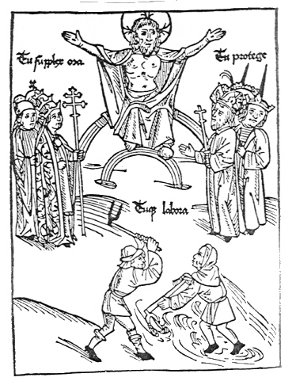
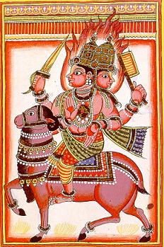

mailto:payer@payer.de
Zitierweise | cite as:
Payer, Alois <1944 - >: Sanskritkurs. -- 2. Lektion 2. -- Fassung vom 2009-01-27. -- URL: http://www.payer.de/sanskritkurs/lektion02.htm
Erstmals hier publiziert: 2008-11-17
Überarbeitungen: 2009-01-27 [Verbesserungen] ; 2008-11-24 [Ergänzungen]
Anlass: Lehrveranstaltungen 1980 - 1984
©opyright: Dieser Text steht der Allgemeinheit zur Verfügung. Eine Verwertung in Publikationen, die über übliche Zitate hinausgeht, bedarf der ausdrücklichen Genehmigung des Verfassers
Dieser Text ist Teil der Abteilung Sanskrit von Tüpfli's Global Village Library
Falls Sie die diakritischen Zeichen nicht dargestellt bekommen, installieren Sie eine Schrift mit Diakritika wie z.B. Tahoma.
Die Devanāgarī-Zeichen sind in Unicode kodiert. Sie benötigen also eine Unicode-Devanāgarī-Schrift.
| Schema: Prädikatsnomen - Subjekt z.B. devo viṣṇuḥ = देवो विष्णुः = "Viṣṇu ist ein Gott." |
Eine verbale Kopula ("ist", "sind", "bin", "bist", "seid") ist nicht nötig, kann aber manchmal vorkommen.
Es gibt keine Artikel: devaḥ -- देवः kann bedeuten "der Gott" oder "ein Gott".
Obwohl im Sanskrit die Satzstellung ziemlich frei ist (besonders in Versen), muss man bei der Übersetzung eines Nominalsatzes immer in erster Linie eine Übersetzung gemäß obigem Standardschema in Betracht ziehen.
Im Nominalsatz steht das Subjekt im Nominativ (ersten Fall = prathamā f. = प्रथमा). Das Prädikatsnomen stimmt mit dem Subjekt in Zahl und Fall überein; wenn das Prädikatsnomen ein Adjektiv ist, auch im Geschlecht.
Im Sanskrit gibt es
Zur Deklination treten die Kasusendungen (sup = सुप्) an den sogenannten Nominalstamm (Form des Nomens ohne Kasusendungen). So z.B. devas = देवस् (Nominativ Singular Maskulinum = erster Fall Einzahl männlich = prathamā ekavacanam puṃs = प्रथमा एकवचनम् पुंस्) "der/ein Gott" = deva- -- देव- (Nominalstamm) + -s -- -स् (Kasusendung des Nominativ Singular)
In Sanskritwörterbüchern und -grammatiken werden Nomina nicht im Nominativ Singular (erster Fall Einzahl, prathamā ekavacanam) (wie z.B. im Lateinischen) angeführt, sondern in der Form des (bei mehrstämmigen Nomina: eines) Nominalstamms, z.B.
| Der Nominativ Singular (prathamā ekavacana) endet auf -s = -स् bzw. ist endungsfrei |
Folgende Nominalstämme die mit einem Vokal enden, bilden den Nominativ Singular auf -s:
|
Der Auslaut eines Wortes richtet sich im Sanskrit auch nach dem Anlaut des darauffolgenden Wortes. Diese Erscheinung nennt man sandhi (m.) = सन्धि ("Verbindung").
Siehe auch die Übersicht:
Payer, Alois <1944 - >: Sandhi von auslautendem -s. -- (Materialien zum Sanskrit). -- URL: http://www.payer.de/sanskritmaterialien/ssandhi.htm
Auslautendes -s
Lernen Sie folgende Wörter:
deva m. -- देव : Himmlischer, Gott ; Fürst, König (besonders in Anrede)
īśvara m. -- ईश्वर : Herr, Herrscher, oberste Gottheit, Gott (im monotheistischen Sinn)
brāhmaṇa m. -- ब्राह्मण : Brahmane, Angehöriger des ersten Stands (varṇa m.), des geistlichen Stands -- Priesterstands -- und Lehrstands.
kṣatriya m. -- क्षत्रिय : Kṣatriya, Angehöriger des zweiten Stands (varṇa m.), des Fürstenstands und Wehrstands
vaiśya m. -- वैश्य : Vaiṣya, Angehöriger des dritten Stands (varṇa m.), des Nährstands und Händlerstands
śūdra m. -- शूद्र : Śūdra, Angehöriger des vierten Stands (varṇa m.), des Knechtstands und Dienstleistungsstands (Handwerker usw.)
Nach der klassischen Theorie (z.B. Manusmṛti i, 88-91) ist Aufgabe
- der Brahmanen
- Vedastudium
- Lehre
- Opfer für sich
- Opfer für andere
- Geben
- Empfangen von Gaben
- der Kṣatriyas
- das Volk schützen
- Gaben (an Brahmanen) geben
- für sich opfern
- Vedastudium
- der Vaiśyas
- Viehhaltung
- Landwirtschaft
- Handel
- Geldverleih
- für sich opfern
- Gaben (an Brahmanen) geben
- Vedastudium
- der Śūdras
- den drei oberen Klassen dienen
dvija m. -- द्विज : Zweimalgeborener: Angehöriger eines der drei ersten Stände (varṇa m.); zweimal geboren: einmal natürliche Geburt, das zweite Mal durch die Zeremonie des upanayana (n.), bei der der Knabe initiiert wird; insbesondere: dvija = Brahmane ; dvija auch = Vogel oder ein anderes eigeborenes Lebewesen: sie erscheinen in einer ersten Geburt als Ei, in einer zweiten beim Schlüpfen.
varṇa m.-- वर्ण : Farbe, Geburtsstand
Die vier Stände (varṇa m.) werden oft mit Kasten verwechselt. Die vier Stände sind aber -- im Unterschied zu den Kasten -- nichts spezifisch Indisches, auch in Europa hatten wir (teils bis zum Ersten Weltkrieg) eine Ständeordnung, wie folgende Abbildung aus dem 15. Jhdt. belegt:

Abb.: Darstellung der Ständeeinteilung des europäischen Mittelalters
(Holzschnitt des ausgehenden 15. Jahrhunderts)
Beschriftung:
Die drei Stände tragen die jeweilige Standestracht. Über den - damit als gottgewollt bezeichneten - Ständen trohnt Christus.
[Bildquelle: Meyer, Werner: Hirsebrei und Hellebarde : auf den Spuren des mittelalterlichen Lebens in der Schweiz . -- 2. Aufl. -- Olten [u.a.] : Walter, 1986. -- ISBN: 3-530-56707-8. -- S. 129]
Max Weber <1864 - 1920> definiert Stand so
»Stand« soll eine Vielheit von Menschen heißen, die innerhalb eines Verbandes wirksam
- eine ständische Sonderschätzung, - eventuell also auch
- ständische Sondermonopole in Anspruch nehmen.
Stände können entstehen
- primär, durch eigene ständische Lebensführung, darunter insbesondere durch die Art des Berufs (Lebensführungs- bzw. Berufsstände),
- sekundär, erbcharismatisch, durch erfolgreiche Prestigeansprüche kraft ständischer Abstammung (Geburtsstände),
- durch ständische Appropriation von politischen oder hierokratischen Herrengewalten als Monopole (politische bzw. hierokratische Stände).
Die geburtsständische Entwicklung ist regelmäßig eine Form der (erblichen) Appropriation von Privilegien an einen Verband oder an qualifizierte Einzelne. Jede feste Appropriation von Chancen, insbesondere [von] Herren [gewalten oder Erwerbs] chancen, neigt dazu, zur Ständebildung zu führen. Jede Ständebildung neigt dazu, zur monopolistischen Appropriation von Herrengewalten und Erwerbschancen zu führen.Während Erwerbsklassen auf dem Boden der marktorientierten Wirtschaft wachsen, entstehen und bestehen Stände vorzugsweise auf dem Boden der monopolistisch leiturgischen oder der feudalen oder der ständisch patrimonialen Bedarfsdeckung von Verbänden.
»Ständisch« soll eine Gesellschaft heißen, wenn die soziale Gliederung vorzugsweise nach Ständen, »klassenmäßig«, wenn sie vorzugsweise nach Klassen geschieht. Dem »Stand« steht von den »Klassen« die »soziale« Klasse am nächsten, die »Erwerbsklasse« am fernsten. Stände werden oft ihrem Schwerpunkt nach durch Besitzklassen gebildet.
Jede ständische Gesellschaft ist konventional, durch Regeln der Lebensführung, geordnet, schafft daher ökonomisch irrationale Konsumbedingungen und hindert auf diese Art durch monopolistische Appropriationen und durch Ausschaltung der freien Verfügung über die eigene Erwerbsfähigkeit die freie Marktbildung."
[Weber, Max <1864 - 1920>: Wirtschaft und Gesellschaft : Grundriss der verstehenden Soziologie. -- 5., revidierte Aufl., Studienausgabe. -- Tübingen : Mohr, 1976. -- ISBN: 3-16-538521-1. -- S. 625 f.]
Varṇas sind demgemäß Geburtsstände.
kavi m. -- कवि : Dichter
agni m. -- अग्नि : Feuer, Gott Agni

Abb.: Gott Agni, Miniatur, 18. Jhdt
[Bildquelle: Wikipedia, Public domain]
sādhu 3 -- साधु : richtig, gut
sādhu m. -- साधु : "heiliger" Mann, Sādhu
Abb.: Sādhu (साधु), Pashupatinath Tempel (पशुपतिनाथ
मन्दिर), Kathmandu
(काठमांडौ), Nepal (नेपाल), 2007
[Bildquelle: Peter Akkermans, Wikipedia, GNU FDLizenz]
guru 3 -- गुरु : schwer, bedeutend, verehrenswert
guru m. -- गुरु : verehrenswerte Person: Vater, Mutter, älterer Verwandter, insbes. Lehrer, Meister
A) Setzen Sie in den folgenden Sätzen unter Beachtung des Sandhi die angegebenen Namen und Nomina ein und bilden Sie Nominalsätze:
B) Übersetzen Sie ins Sanskrit:
Zu Lektion 3